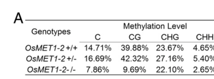

MET1A (OsMET1a / OsMET1-1; UniProt Q7Y1I7; LOC_Os03g58400 / Os03g0798300) is a rice DNMT1-like maintenance DNA (cytosine-5) methyltransferase (EC 2.1.1.37). Its core molecular function is the S-adenosyl-L-methionine-dependent transfer of a methyl group to the C5 position of cytosine in DNA, acting primarily at symmetric CG (CpG) sites to copy methylation patterns onto the nascent strand after DNA replication - i.e. maintenance CG methylation underpinning epigenetic inheritance. The protein has the canonical DNMT1 architecture: two N-terminal RFTS/replication-foci-targeting regions, two BAH (bromo-adjacent homology) chromatin-reading domains, and a C-terminal SAM-dependent C5 methyltransferase catalytic domain with the conserved active-site cysteine (Act_site 1197). Rice carries two closely related MET1 paralogs, OsMET1a (OsMET1-1, this gene) and OsMET1b (OsMET1-2). Both contain all binding and catalytic domains required for a functional CG methylase, but OsMET1b is the dominant, far more highly expressed enzyme: ribonuclease protection assays show steady-state OsMET1-2 mRNA is 7- to 12-fold higher than OsMET1-1 in callus, root and inflorescence [PMID:14513380], and an OsMET1-1 knock-in mutant produces no discernible developmental phenotype, indicating a minor and/or redundant role for OsMET1a in CG-methylation maintenance compared with OsMET1b [file:ORYSJ/MET1A/MET1A-deep-research-falcon.md]. The most quantitative causal data for the rice MET1 pathway come from loss of the major paralog OsMET1b, where gene-body mCG falls ~86% (27.35% to 3.95%), transposon mCG falls ~77%, transposons are derepressed, and OsMET1a is transcriptionally induced ~2.5-fold together with a VIM-like cofactor (~4.5-fold) - placing OsMET1a squarely in the CG maintenance machinery and its compensatory/buffering responses [file:ORYSJ/MET1A/MET1A-deep-research-falcon.md]. MET1A acts in the nucleus on chromosomal DNA. By maintaining CG methylation it contributes (secondarily) to transposon/heterochromatin silencing and methylation-dependent gene silencing, but its defining role is the maintenance methyltransferase reaction itself, not a particular downstream regulatory outcome. Direct in vitro biochemical assays of OsMET1a substrate preference and a dedicated subcellular localization experiment have not been reported; nuclear localization (UniProt, ECO:0000305) and CG specificity are inferred from the enzyme class, domain architecture, and the rice MET1 genetics literature.
| GO Term | Evidence | Action | Reason |
|---|---|---|---|
|
GO:0005634
nucleus
|
IBA
GO_REF:0000033 |
ACCEPT |
Summary: IBA annotation propagated across the DNMT1/MET1 phylogenetic group. As a DNA (cytosine-5) methyltransferase acting on chromosomal DNA, MET1A functions in the nucleus.
Reason: Core cellular-component annotation and well supported. UniProt assigns MET1A to the nucleus (ECO:0000305), consistent with a maintenance DNA methyltransferase that copies CG methylation onto chromosomal DNA during/after replication. The deep-research synthesis reaches the same conclusion. The IBA term is at the correct level of specificity.
Supporting Evidence:
file:ORYSJ/MET1A/MET1A-deep-research-falcon.md
Based on its demonstrated role as a DNA methyltransferase maintaining genomic CG methylation, its functional site of action is most plausibly the **nucleus**
|
|
GO:0003677
DNA binding
|
IBA
GO_REF:0000033 |
ACCEPT |
Summary: IBA annotation propagated from the DNMT1/MET1 group. MET1A binds DNA: it is a DNA-dependent enzyme whose substrate is double-stranded (hemimethylated) genomic DNA.
Reason: Correct and supported by the protein's enzyme class and domain architecture (DNA-binding keyword in UniProt; C5-methyltransferase catalytic domain acting on DNA). DNA binding is a generic term but it is not wrong; the more informative molecular function is the cytosine-5 methyltransferase activity (GO:0003886, retained below). Accept the IBA DNA-binding annotation.
Supporting Evidence:
PMID:14513380
each encoding a cytosine-5 DNA methyltransferase (MTase)
file:ORYSJ/MET1A/MET1A-deep-research-falcon.md
OsMET1-1 and OsMET1-2 are highly similar and contain all **binding and catalytic domains required for a functional CG methylase**
|
|
GO:0003682
chromatin binding
|
IEA
GO_REF:0000002 |
ACCEPT |
Summary: IEA annotation from InterPro (IPR001025, BAH domain). MET1A contains two BAH (bromo-adjacent homology) domains, chromatin-reading modules of DNMT1/MET1 enzymes.
Reason: Supported by domain content. UniProt annotates two BAH domains (residues 742-874 and 910-1049) in MET1A, and the InterPro BAH-to-GO mapping assigns chromatin binding. BAH domains in DNMT1/MET1 read chromatin/nucleosome marks to target maintenance methylation to replicating heterochromatin, so chromatin binding is an appropriate, if generic, molecular-function annotation for this enzyme.
Supporting Evidence:
file:ORYSJ/MET1A/MET1A-deep-research-falcon.md
UniProt/domain annotation for Q7Y1I7 further supports a DNMT1-like architecture with **BAH** and **C5-methyltransferase** domains
|
|
GO:0003886
DNA (cytosine-5-)-methyltransferase activity
|
IEA
GO_REF:0000120 |
ACCEPT |
Summary: IEA annotation (RHEA:13681 / EC 2.1.1.37). This is the defining, core molecular function of MET1A: SAM-dependent transfer of a methyl group to C5 of cytosine in DNA.
Reason: This is the core molecular function and is strongly supported. UniProt assigns EC 2.1.1.37 with the explicit catalytic reaction (a 2'-deoxycytidine in DNA + SAM = a 5-methyl-2'-deoxycytidine in DNA + S-adenosyl-L-homocysteine + H+), and the protein belongs to the class I-like SAM-binding methyltransferase superfamily, C5-methyltransferase family, with the conserved active-site cysteine at position 1197. The biochemical paper describes OsMET1-1 directly as a cytosine-5 DNA methyltransferase. This is precisely the activity that the bare retired keyword term "methylation" (GO:0032259) failed to capture.
Supporting Evidence:
PMID:14513380
each encoding a cytosine-5 DNA methyltransferase (MTase)
file:ORYSJ/MET1A/MET1A-deep-research-falcon.md
MET1A is annotated as a SAM-dependent **DNA (cytosine-5) methyltransferase (EC 2.1.1.37)** that transfers a methyl group to the **C5 position of cytosine** in DNA
|
|
GO:0005634
nucleus
|
IEA
GO_REF:0000044 |
ACCEPT |
Summary: IEA annotation derived from the UniProtKB/Swiss-Prot subcellular-location mapping (SL-0191, Nucleus); duplicates the IBA nucleus annotation.
Reason: Correct and consistent with the IBA nucleus annotation and with the UniProt subcellular location (Nucleus, ECO:0000305). Duplicate cellular-component annotations with different evidence codes are acceptable. A maintenance DNA methyltransferase acts on chromosomal DNA in the nucleus.
Supporting Evidence:
file:ORYSJ/MET1A/MET1A-deep-research-falcon.md
a DNA methyltransferase acting on chromosomal DNA is most plausibly **nuclear**
|
|
GO:0008168
methyltransferase activity
|
IEA
GO_REF:0000002 |
MARK AS OVER ANNOTATED |
Summary: IEA annotation from InterPro (IPR001525, C5_MeTfrase). "Methyltransferase activity" is the high-level parent of the gene's specific DNA (cytosine-5) methyltransferase activity.
Reason: "Methyltransferase activity" is a broad grouping term. MET1A is a methyltransferase, so the term is not wrong, but it is uninformative once the specific child term DNA (cytosine-5-)- methyltransferase activity (GO:0003886, retained above) is present - the specific term drops both the substrate (DNA) and the position (C5 of cytosine). Retaining a bare "methyltransferase activity" alongside the specific MF adds no information. Mark as over-annotated; the specific MF is the one to keep.
Supporting Evidence:
file:ORYSJ/MET1A/MET1A-deep-research-falcon.md
MET1A is annotated as a SAM-dependent **DNA (cytosine-5) methyltransferase (EC 2.1.1.37)** that transfers a methyl group to the **C5 position of cytosine** in DNA
|
|
GO:0045814
negative regulation of gene expression, epigenetic
|
IEA
GO_REF:0000117 |
KEEP AS NON CORE |
Summary: IEA annotation (ARBA machine-learning model). CG methylation by MET1 contributes to epigenetic gene silencing, but this is a downstream consequence rather than MET1A's defining function.
Reason: Biologically reasonable but non-core. Maintenance CG methylation by MET1 enzymes contributes to methylation-dependent epigenetic gene silencing - RNAi knockdown of OsMET1-1 reactivated a silenced transgene, consistent with the involvement of maintenance methylation in silencing [PMID:14513380]. However, "negative regulation of gene expression, epigenetic" is a pleiotropic downstream outcome of the enzyme's activity, not the molecular reaction the gene product carries out. Keep, but mark as non-core; the core annotation is the methyltransferase activity and the maintenance-methylation process.
Supporting Evidence:
PMID:14513380
Restoration of uidA expression in the bombarded calli was consistent with the inactivation of maintenance methylation and with previous evidence for the involvement of methylation in silencing of this line.
file:ORYSJ/MET1A/MET1A-deep-research-falcon.md
linking CG maintenance methylation to TE repression and transcriptome stability
|
|
GO:0006346
DNA methylation-dependent constitutive heterochromatin formation
|
IMP
PMID:14513380 Characterization of two rice DNA methyltransferase genes and... |
KEEP AS NON CORE |
Summary: IMP annotation citing PMID:14513380. RNAi knockdown of OsMET1-1 in rice callus reactivated a methylation-silenced transgene, implicating MET1A-mediated maintenance methylation in heterochromatin/silencing - a downstream contribution rather than the core enzymatic role.
Reason: The annotation is reasonably supported by the cited reference but represents a secondary role. Teerawanichpan et al. used RNAi inverted-repeat constructs against OsMET1-1 and restored expression of a silenced 35S-uidA-nos transgene, consistent with loss of maintenance methylation [PMID:14513380]. MET1-mediated CG maintenance does contribute to transposon/heterochromatin silencing (loss of the major paralog OsMET1b causes broad transposon derepression). However, OsMET1a is the minor paralog (7-12x lower expression; no knock-in phenotype), and constitutive-heterochromatin formation is a downstream, pleiotropic consequence of CG maintenance rather than MET1A's defining function. Keep as non-core; the core process is maintenance CG methylation (see the SPKW MODIFY entry to GO:0141119).
Supporting Evidence:
PMID:14513380
Restoration of uidA expression in the bombarded calli was consistent with the inactivation of maintenance methylation and with previous evidence for the involvement of methylation in silencing of this line.
PMID:14513380
the steady-state level of OsMET1-2 was 7- to 12-fold higher than that for OsMET1-1 in callus, root and inflorescence
|
|
GO:0044027
negative regulation of gene expression via chromosomal CpG island methylation
|
ISS
GO_REF:0000024 |
KEEP AS NON CORE |
Summary: ISS annotation transferred from human DNMT1 (UniProtKB:P34881). CG methylation by MET1A can repress gene expression at CpG-rich regions, but the CpG-island concept is mammalian and this is a downstream regulatory outcome, not the core function.
Reason: The essence (CG methylation leading to transcriptional repression) is consistent with MET1 biology - maintenance CG methylation is associated with silencing, and RNAi of OsMET1-1 reactivated a methylation-silenced transgene [PMID:14513380]. However, the term is an ISS transfer from human DNMT1 framed around mammalian "CpG islands" (gene-promoter CG-dense regions), a concept that does not map cleanly onto plant genome methylation, where CG, CHG and CHH methylation predominate over much of the genome including transposons. It is best retained as a non-core, similarity-based annotation describing a downstream regulatory consequence rather than MET1A's defining maintenance-methyltransferase reaction.
Supporting Evidence:
PMID:14513380
Restoration of uidA expression in the bombarded calli was consistent with the inactivation of maintenance methylation and with previous evidence for the involvement of methylation in silencing of this line.
file:ORYSJ/MET1A/MET1A-deep-research-falcon.md
OsMET1a is described as a **maintenance DNA methyltransferase responsible for CG methylation**
|
|
GO:0032259
methylation
|
IEA
GO_REF:0000043 |
MODIFY |
Summary: SPKW (GO_REF:0000043) annotation derived from the UniProt keyword "Methyltransferase"; snapshot-only, removed in the current GOA release. "Methylation" (GO:0032259) is the bare, substrate-agnostic process term ("a methyl group is covalently attached to a molecule") - it drops the substrate (DNA), the position (C5 of cytosine) and the maintenance specificity that define MET1A.
Reason: This is the classic enzyme-class-keyword -> bare-process conflation (Tier A). MET1A is a DNA (cytosine-5) methyltransferase (EC 2.1.1.37) whose specific biological process is maintenance of CG DNA methylation after replication, not generic "methylation". The generic term GO:0032259 is uninformative: it would equally fit a protein, RNA, or small-molecule methyltransferase. The substrate-specific, MET1-specific process term is GO:0141119 "chromosomal DNA methylation maintenance following DNA replication", whose GO definition explicitly states that CG methylation is maintained by "a maintenance DNA methyltransferase called DNMT1 in mammals and MET1 (DNA METHYLTRANSFERASE 1) in plants" together with the VIM cofactor - matching OsMET1a exactly (including the ~4.5-fold VIM co-induction seen when the major paralog OsMET1b is lost). NOTE: the older generic process terms "DNA methylation" (GO:0006306) and "maintenance of DNA methylation"-type "negative regulation of gene expression via chromosomal DNA cytosine methylation" (GO:0010216) are now OBSOLETE in the authoritative GO release, so GO:0141119 is the correct non-obsolete replacement. Removing the bare keyword term loses nothing of value, but the underlying maintenance-methylation biology should be captured by GO:0141119, so a MODIFY (rather than a plain MARK_AS_OVER_ANNOTATED) is the right action. Tier A.
Proposed replacements:
chromosomal DNA methylation maintenance following DNA replication
Supporting Evidence:
PMID:14513380
Restoration of uidA expression in the bombarded calli was consistent with the inactivation of maintenance methylation and with previous evidence for the involvement of methylation in silencing of this line.
file:ORYSJ/MET1A/MET1A-deep-research-falcon.md
Maintenance methylation refers to the **copying of symmetric methylation patterns (especially CG) onto the nascent strand following semi-conservative DNA replication**, enabling epigenetic inheritance across cell divisions. In rice, **CG methylation is mainly maintained by MET1 enzymes**, specifically **OsMET1a (OsMET1-1)** and **OsMET1b (OsMET1-2)**
file:ORYSJ/MET1A/MET1A-deep-research-falcon.md
MET1A is annotated as a SAM-dependent **DNA (cytosine-5) methyltransferase (EC 2.1.1.37)** that transfers a methyl group to the **C5 position of cytosine** in DNA, primarily maintaining **CG methylation**
|
|
GO:0141119
chromosomal DNA methylation maintenance following DNA replication
|
ISS
file:ORYSJ/MET1A/MET1A-deep-research-falcon.md |
NEW |
Summary: Proposed substrate-specific process annotation capturing MET1A's core biological role: maintenance of symmetric CG methylation by copying the parental methylation pattern onto the newly replicated strand. This is the precise term that should replace the retired bare "methylation" (GO:0032259) keyword annotation.
Reason: MET1A is a DNMT1/MET1-class maintenance CG methyltransferase. The GO definition of GO:0141119 names MET1 in plants as the maintenance DNA methyltransferase and VIM as its cofactor, exactly matching the rice MET1a biology synthesized in the deep-research report (OsMET1a/OsMET1b maintain CG methylation; loss of the major paralog OsMET1b collapses gene-body mCG from 27.35% to 3.95% and co-induces OsMET1a ~2.5-fold and a VIM-like factor ~4.5-fold). The current GOA has no substrate-specific maintenance-methylation process term for MET1A; this is the appropriate, non-obsolete replacement for the generic SPKW "methylation" term. ISS is used because rice OsMET1a-specific in vitro/in vivo maintenance assays were not retrieved; the assignment rests on enzyme class, DNMT1-like domain architecture (RFTS + BAH + C5-MTase), and orthology to characterized MET1/DNMT1 maintenance methyltransferases.
Supporting Evidence:
file:ORYSJ/MET1A/MET1A-deep-research-falcon.md
Maintenance methylation refers to the **copying of symmetric methylation patterns (especially CG) onto the nascent strand following semi-conservative DNA replication**, enabling epigenetic inheritance across cell divisions. In rice, **CG methylation is mainly maintained by MET1 enzymes**, specifically **OsMET1a (OsMET1-1)** and **OsMET1b (OsMET1-2)**
PMID:14513380
each encoding a cytosine-5 DNA methyltransferase (MTase)
|
Q: Does rice OsMET1a have intrinsic maintenance CG-methyltransferase activity in vitro, and does it preferentially methylate hemimethylated CG substrates as expected for a DNMT1/MET1 maintenance enzyme?
Suggested experts: Bao Liu
Q: What is the division of labour between OsMET1a and the dominant paralog OsMET1b - is OsMET1a a genuine backup maintenance methylase induced when OsMET1b is lost, or does it have locus- or tissue-specific maintenance targets?
Suggested experts: Xiaofeng Cao
Experiment: Express and purify recombinant OsMET1a and assay SAM-dependent methyl transfer on hemimethylated versus unmethylated CG, CHG and CHH oligonucleotide substrates to confirm maintenance CG specificity directly.
Hypothesis: OsMET1a is a maintenance methyltransferase with strong preference for hemimethylated CG (CpG) sites, consistent with the DNMT1/MET1 class.
Type: in vitro methyltransferase activity assay
Experiment: Generate clean osmet1a single and osmet1a osmet1b double knockouts (e.g. by CRISPR) and perform whole-genome bisulfite sequencing to quantify the CG-methylation contribution attributable specifically to OsMET1a, including in the OsMET1b-deficient background where OsMET1a is induced.
Hypothesis: OsMET1a makes a measurable but minor contribution to genome-wide CG maintenance that becomes detectable (or essential) only when OsMET1b is absent.
Type: genetic knockout combined with whole-genome bisulfite sequencing
Experiment: Determine the subcellular localization and replication-coupling of OsMET1a using a functional OsMET1a-GFP fusion and co-localization with replication-fork/PCNA markers in dividing rice cells.
Hypothesis: OsMET1a localizes to the nucleus and is recruited to replication foci during S phase, consistent with a replication-coupled maintenance methyltransferase.
Type: fluorescent-protein localization and replication co-localization assay
The research report should be a detailed narrative explaining the function, biological processes, and localization of the gene product. Citations should be given for all claims.
You should prioritize authoritative reviews and primary scientific literature when conducting research. You can supplement
this with annotations you find in gene/protein databases, but these can be outdated or inaccurate.
We are specifically interested in the primary function of the gene - for enzymes, what reaction is catalyzed, and what is the substrate specificity? For transporters, what is the substrate? For structural proteins or adapters, what is the broader structural role? For signaling molecules, what is the role in the pathway.
We are interested in where in or outside the cell the gene product carries out its function.
We are also interested in the signaling or biochemical pathways in which the gene functions. We are less interested in broad pleiotropic effects, except where these elucidate the precise role.
Include evidence where possible. We are interested in both experimental evidence as well as inference from structure, evolution, or bioinformatic analysis. Precise studies should be prioritized over high-throughput, where available.
MET1A (OsMET1a/OsMET1-1) encodes a DNMT1-like maintenance DNA (cytosine-5) methyltransferase in Oryza sativa (japonica), primarily responsible for maintaining symmetric CG (CpG) methylation after DNA replication as part of epigenetic inheritance. In rice, MET1A is one of two closely related MET1 paralogs (OsMET1-1/OsMET1a and OsMET1-2/OsMET1b), and available evidence indicates OsMET1b is the major, more highly expressed CG maintenance enzyme, while OsMET1a is lower-expressed and can appear phenotypically redundant in some mutant/knock-in contexts. Quantitative whole-genome bisulfite sequencing in an OsMET1b loss-of-function background shows profound CG methylation loss (e.g., gene-body mCG 27.35% → 3.95%) and strong transposon derepression, accompanied by compensatory upregulation of OsMET1a (~2.5-fold) and a VIM-like factor (~4.5-fold), linking OsMET1a into the broader CG-maintenance machinery and its buffering responses. (hu2014mutationofa pages 1-2, hu2014mutationofa pages 3-4, hu2014mutationofa pages 4-5, yin2024impactofabiotic pages 8-10, hu2014mutationofa media f7e45d7c)
Plant cytosine methylation occurs in CG, CHG, and CHH sequence contexts (H = A/C/T). Maintenance methylation refers to the copying of symmetric methylation patterns (especially CG) onto the nascent strand following semi-conservative DNA replication, enabling epigenetic inheritance across cell divisions. In rice, CG methylation is mainly maintained by MET1 enzymes, specifically OsMET1a (OsMET1-1) and OsMET1b (OsMET1-2). (yin2024impactofabiotic pages 8-10)
Hu et al. (2014) describe rice OsMET1-1 and OsMET1-2 as highly similar and “composed of all binding and catalytic domains required for a functional CG methylase,” supporting their annotation as DNMT1-like maintenance CG methyltransferases. (hu2014mutationofa pages 1-2)
Enzymatic reaction (functional annotation): MET1A is annotated as a SAM-dependent DNA (cytosine-5) methyltransferase (EC 2.1.1.37) that transfers a methyl group to the C5 position of cytosine in DNA, primarily maintaining CG methylation. Direct rice OsMET1a enzymatic assays were not retrieved in the accessible texts here; thus, the reaction chemistry is inferred from its enzyme class and from the direct statements that it is responsible for CG methylation maintenance. (hu2014mutationofa pages 1-2, kumar2022pup1qtlregulates pages 18-19, yin2024impactofabiotic pages 8-10)
Rice MET1-mediated CG methylation functions within an integrated epigenetic network that includes:
- RdDM (RNA-directed DNA methylation), which is critical for many CHH methylation loci and is linked to small RNA populations (notably 24-nt siRNAs). (hu2014mutationofa pages 5-6, yin2024impactofabiotic pages 8-10)
- Chromatin remodeling and heterochromatin, including DDM1-dependent methylation and cross-compensation between DDM1 and RdDM (“double insurance” model) for transposon silencing described in a 2024 rice-focused review. (yin2024impactofabiotic pages 8-10)
The target protein is OsMET1a / MET1A (OsMET1-1) from Oryza sativa ssp. japonica, mapped to LOC_Os03g58400 in rice stress methylome work and consistently contrasted with the paralog OsMET1b/OsMET1-2 in rice methylation genetics literature. This supports that the report is about the intended rice MET1A protein (UniProt Q7Y1I7), not a MET1 gene from another organism. (hu2014mutationofa pages 1-2, kumar2022pup1qtlregulates pages 18-19, yin2024impactofabiotic pages 8-10)
OsMET1a is described as a maintenance DNA methyltransferase responsible for CG methylation. (kumar2022pup1qtlregulates pages 18-19, yin2024impactofabiotic pages 8-10)
The most specific evidence available indicates MET1 enzymes in rice maintain CG methylation. In a rice mutant study focusing on the major paralog (OsMET1-2/OsMET1b), 89% of hypomethylated differentially methylated cytosines were in CG context, consistent with MET1-class specificity for CG sites and supporting MET1A’s pathway-level specificity as a CG maintenance enzyme. (hu2014mutationofa pages 3-4)
In the rice MET1 paralog pair, OsMET1-2 transcripts accumulate more abundantly than those of OsMET1-1 in all examined wild-type tissues, suggesting OsMET1b is the dominant paralog under many conditions. (hu2014mutationofa pages 1-2)
A 2024 review similarly describes OsMET1b as the primary enzyme with broader/higher expression, with OsMET1a as the other CG maintenance paralog. (yin2024impactofabiotic pages 8-10)
In OsMET1-2 loss-of-function seedlings, OsMET1-1 (OsMET1a) expression is moderately but significantly upregulated (~2.5-fold), consistent with compensation within the CG maintenance pathway. (hu2014mutationofa pages 3-4)
In a rice phosphate starvation stress study using WGBS and transcriptomics in a Pup1-introgressed line (NIL-23) versus Pusa-44, OsMET1a (LOC_Os03g58400) expression is reported to track with promoter methylation state: promoter hypomethylation is associated with increased OsMET1a expression in NIL-23 roots, while promoter hypermethylation is associated with reduced expression in Pusa-44 under the same stress. (kumar2022pup1qtlregulates pages 18-19)
No direct subcellular localization experiment (e.g., GFP fusion or fractionation) for OsMET1a was retrieved in the accessible texts. Based on its demonstrated role as a DNA methyltransferase maintaining genomic CG methylation, its functional site of action is most plausibly the nucleus; however, this should be treated as inference pending direct localization data. (hu2014mutationofa pages 1-2, yin2024impactofabiotic pages 8-10)
A rice study summarized by Hu et al. (2014) reports that a knock-in mutant of OsMET1-1 (OsMET1a) “failed to produce discernible developmental phenotypes,” interpreted as suggesting minimal and/or redundant function for OsMET1a in maintaining CG methylation compared with OsMET1-2. (hu2014mutationofa pages 1-2)
While not an OsMET1a mutant per se, the OsMET1-2 knockout phenotype provides strong mechanistic evidence for MET1-class CG maintenance in rice and demonstrates what loss of MET1-mediated CG methylation causes in this genome:
- Gene-body CG methylation decreased by 86% (from 27.35% in WT to 3.95% in OsMET1-2−/−). (hu2014mutationofa pages 3-4)
- Transposable element (TE) mCG decreased by 77%, and remaining mCG was relatively enriched in TEs compared with genes, indicating differential maintenance across genomic features. (hu2014mutationofa pages 3-4, hu2014mutationofa pages 5-6)
- Broad expression impacts were observed, including 3,744 affected genes (47.5% up; 52.5% down) and 21.9% of transcribed TEs (594/2,716) differentially expressed, with 82.3% of those TEs upregulated (489/594), linking CG maintenance methylation to TE repression and transcriptome stability. (hu2014mutationofa pages 4-5, hu2014mutationofa pages 5-6)
These quantitative results are visually supported by a figure/table in Hu et al. (2014) (Figure 2), which includes global/context methylation summaries and feature-level methylation profiles. (hu2014mutationofa media f7e45d7c, hu2014mutationofa media e05be17b)
In the OsMET1-2 mutant, a VIM-family gene (LOC_Os05g01230) is upregulated about 4.5-fold, and the authors note VIM proteins cooperate with CG methylases in CG methylation maintenance. (hu2014mutationofa pages 3-4)
Hu et al. further propose that residual/regained CG methylation in the OsMET1-2 mutant could involve OsMET1-1 together with VIMs, potentially in interplay with RdDM, particularly in heterochromatic TE-rich regions; small-RNA and CHH methylation patterns in the mutant support MET1–RdDM pathway interactions. (hu2014mutationofa pages 3-4, hu2014mutationofa pages 5-6)
Direct, OsMET1a-focused primary studies from 2023–2024 were not retrieved in the accessible document set; however, rice-focused 2024 review literature consolidates current understanding relevant to MET1A functional annotation:
- A 2024 review in Plants frames rice CG maintenance methylation as being mediated mainly by OsMET1a (OsMET1-1) and OsMET1b (OsMET1-2), with OsMET1b as the primary enzyme with broader/higher expression, and emphasizes integration with non-CG methylation systems (CMTs, DRM2/RdDM) and chromatin remodeling (DDM1) for TE silencing and stress responses. (Yin et al., Sep 2024; https://doi.org/10.3390/plants13192700) (yin2024impactofabiotic pages 8-10, yin2024impactofabiotic pages 24-25)
- A 2024 review in Agronomy provides a contemporaneous synthesis of DNA methylation enzyme classes and highlights that MET1 is the CG maintenance methyltransferase and that MET1 function is integrated with methylation readers such as VIM proteins (primarily described in Arabidopsis but conceptually relevant to MET1-class biology). (Qiao et al., Dec 2024; https://doi.org/10.3390/agronomy15010094) (qiao2024theroleofa pages 1-3)
The Pup1 QTL phosphate-starvation study demonstrates a real-world implementation of integrating whole-genome bisulfite sequencing with transcriptomics to link methylation changes to stress-responsive gene regulation in rice, including OsMET1a regulation by promoter methylation. It reports genome-scale methylation and DMR counts under stress, such as 13–15% of total cytosines methylated in the rice genome (in their materials), 6,068 hypo-DMRs vs 5,279 hyper-DMRs under phosphate starvation stress, and methylation-associated upregulation of hundreds of genes (e.g., CHH hypomethylation associated with upregulation of 489 genes in shoot and 382 genes in root of NIL-23 under stress). (Kumar et al., May 2022; https://doi.org/10.3389/fpls.2022.871890) (kumar2022pup1qtlregulates pages 18-19)
Although this does not establish OsMET1a as a single causal determinant of tolerance, it supports that OsMET1a is a measurable, regulated component of the stress-associated methylation machinery in rice roots. (kumar2022pup1qtlregulates pages 18-19)
The 2024 rice-focused review emphasizes that rice DNA methylation pathways (including MET1-mediated CG maintenance, RdDM, and chromatin remodeling) are central to stress responses and are therefore potential targets for breeding strategies that modulate epigenetic state. However, the retrieved evidence base here does not include a rice MET1A-targeted epigenome-editing implementation; thus, this remains a prospective application in the context of current reviews. (yin2024impactofabiotic pages 8-10)
| Category | Direct evidence for OsMET1a/MET1A | Inference / context (clearly labeled) | Key sources (year; DOI/URL) |
|---|---|---|---|
| Identity / synonyms | UniProt target Q7Y1I7 is rice DNA (cytosine-5)-methyltransferase 1A, short name OsMET1a; gene MET1A; synonyms MET1-1 / OsMET1-1; loci Os03g0798300 / LOC_Os03g58400. Rice literature distinguishes OsMET1-1 (OsMET1a) from OsMET1-2 (OsMET1b), confirming the target is the OsMET1-1 paralog, not a different MET1 gene (hu2014mutationofa pages 1-2, kumar2022pup1qtlregulates pages 18-19, yin2024impactofabiotic pages 8-10) | Because the literature repeatedly maps OsMET1a to LOC_Os03g58400 and contrasts it with OsMET1-2, the symbol is sufficiently disambiguated for functional annotation of Q7Y1I7 (hu2014mutationofa pages 1-2, kumar2022pup1qtlregulates pages 18-19) | Hu et al. 2014, PNAS, DOI: 10.1073/pnas.1410761111, https://doi.org/10.1073/pnas.1410761111 (hu2014mutationofa pages 1-2); Kumar et al. 2022, Front Plant Sci, DOI: 10.3389/fpls.2022.871890, https://doi.org/10.3389/fpls.2022.871890 (kumar2022pup1qtlregulates pages 18-19); Yin et al. 2024, Plants, DOI: 10.3390/plants13192700, https://doi.org/10.3390/plants13192700 (yin2024impactofabiotic pages 8-10) |
| Molecular function & reaction | Rice MET1 proteins are described as maintenance CG methyltransferases; OsMET1a/OsMET1-1 is identified as a maintenance DNA methyltransferase responsible for CG methylation. Hu et al. state OsMET1-1 and OsMET1-2 contain all binding and catalytic domains required for a functional CG methylase; Kumar et al. identify OsMET1a as MET1 responsible for CG methylation (hu2014mutationofa pages 1-2, kumar2022pup1qtlregulates pages 18-19, yin2024impactofabiotic pages 8-10) | The exact catalytic chemistry for Q7Y1I7 is inferred from the MET1/C5-methyltransferase class and UniProt family/domain assignment: SAM-dependent transfer of a methyl group to C5 of cytosine in DNA, acting primarily at hemimethylated CG sites after replication. This is consistent with general MET1 biology described in recent reviews, but a rice OsMET1a-specific biochemical assay was not retrieved here (yin2024impactofabiotic pages 8-10, qiao2024theroleofa pages 1-3) | Hu et al. 2014, https://doi.org/10.1073/pnas.1410761111 (hu2014mutationofa pages 1-2); Kumar et al. 2022, https://doi.org/10.3389/fpls.2022.871890 (kumar2022pup1qtlregulates pages 18-19); Yin et al. 2024, https://doi.org/10.3390/plants13192700 (yin2024impactofabiotic pages 8-10); Qiao et al. 2024, https://doi.org/10.3390/agronomy15010094 (qiao2024theroleofa pages 1-3) |
| Domains / family | Hu et al. report that OsMET1-1 and OsMET1-2 are highly similar and contain all binding and catalytic domains required for a functional CG methylase (hu2014mutationofa pages 1-2) | UniProt/domain annotation for Q7Y1I7 further supports a DNMT1-like architecture with BAH and C5-methyltransferase domains, consistent with a class I-like SAM-binding methyltransferase; this supports maintenance-methylase function when direct domain mapping from primary papers is limited in the retrieved evidence (hu2014mutationofa pages 1-2) | Hu et al. 2014, https://doi.org/10.1073/pnas.1410761111 (hu2014mutationofa pages 1-2) |
| Expression pattern / relative importance | In WT rice tissues, OsMET1-2 transcripts accumulated more abundantly than OsMET1-1 in all examined tissues, implying OsMET1a is the lower-expressed paralog. A reported OsMET1-1 knock-in mutant failed to show discernible developmental phenotypes, suggesting a minimal and/or redundant role relative to OsMET1-2 (hu2014mutationofa pages 1-2) | The cited but not directly retrieved Yamauchi et al. study is described as showing dosage-dependent spatiotemporal expression of MET1a, indicating expression and/or phenotype may depend on gene dosage and developmental context, but detailed primary data were not available in the conversation evidence (li2021genomewideidentificationand pages 15-16, terada2010creloxpmediatedmarker pages 8-9) | Hu et al. 2014, https://doi.org/10.1073/pnas.1410761111 (hu2014mutationofa pages 1-2); Li et al. 2021, https://doi.org/10.1186/s12864-021-07600-7 (li2021genomewideidentificationand pages 15-16); Terada et al. 2010, https://doi.org/10.5511/plantbiotechnology.27.29 (terada2010creloxpmediatedmarker pages 8-9) |
| Pathways / partners: VIM | In OsMET1-2 knockout seedlings, a rice VIM-family gene (LOC_Os05g01230) was upregulated about 4.5-fold; the paper notes VIM proteins cooperate with CG methylases to maintain CG methylation (hu2014mutationofa pages 3-4) | Direct physical interaction between OsMET1a and a rice VIM protein was not shown in the retrieved evidence. The partner relationship is therefore supported as pathway-level inference from MET1/VIM cooperation in CG maintenance and compensatory responses in rice MET1 mutants (hu2014mutationofa pages 3-4, qiao2024theroleofa pages 1-3) | Hu et al. 2014, https://doi.org/10.1073/pnas.1410761111 (hu2014mutationofa pages 3-4); Qiao et al. 2024, https://doi.org/10.3390/agronomy15010094 (qiao2024theroleofa pages 1-3) |
| Pathways / partners: RdDM | Rice MET1 function is linked to RNA-directed DNA methylation (RdDM). Hu et al. propose residual/regained mCG in an OsMET1-2 mutant may be maintained partly via RdDM, especially in heterochromatic TE-rich regions; altered 24-nt small RNAs and CHH methylation support MET1–RdDM interplay (hu2014mutationofa pages 3-4, hu2014mutationofa pages 5-6) | For OsMET1a specifically, RdDM involvement is inferential rather than directly demonstrated. Recent rice reviews state CHH methylation is controlled by RdDM, and MET1-mediated CG maintenance interacts with broader methylation pathways and TE silencing networks (yin2024impactofabiotic pages 8-10, yin2024impactofabiotic pages 24-25) | Hu et al. 2014, https://doi.org/10.1073/pnas.1410761111 (hu2014mutationofa pages 3-4, hu2014mutationofa pages 5-6); Yin et al. 2024, https://doi.org/10.3390/plants13192700 (yin2024impactofabiotic pages 8-10, yin2024impactofabiotic pages 24-25) |
| Pathways / partners: DDM1 / chromatin context | Recent rice review evidence states DDM1-dependent methylation and RdDM can compensate to maintain TE silencing; DDM1 is essential for cytosine methylation in repeats/TEs in rice and acts independently of siRNA at some loci (yin2024impactofabiotic pages 8-10) | No direct OsMET1a–DDM1 interaction was shown in the retrieved OsMET1a-specific studies. The relationship is best described as shared participation in the rice DNA methylation / heterochromatin maintenance network (yin2024impactofabiotic pages 8-10, yin2024impactofabiotic pages 24-25) | Yin et al. 2024, https://doi.org/10.3390/plants13192700 (yin2024impactofabiotic pages 8-10, yin2024impactofabiotic pages 24-25) |
| Key quantitative findings relevant to MET1 pathway | In OsMET1-2 mutants, OsMET1-1 expression increased ~2.5-fold, VIM gene expression increased ~4.5-fold, gene-body mCG fell 86% (27.35% to 3.95%), TE mCG fell 77%, and 89% of hypo-differentially methylated cytosines were in CG context; 594/2,716 TEs (21.9%) changed expression, with 489 (82.3%) upregulated (hu2014mutationofa pages 3-4, hu2014mutationofa pages 4-5, hu2014mutationofa pages 5-6, hu2014mutationofa media f7e45d7c) | These quantitative data come from mutation of the major paralog OsMET1-2, not direct disruption of OsMET1a. They are nevertheless informative for annotating OsMET1a because OsMET1a is transcriptionally induced in this background and belongs to the same maintenance-CG pathway (hu2014mutationofa pages 3-4, hu2014mutationofa pages 4-5) | Hu et al. 2014, https://doi.org/10.1073/pnas.1410761111 (hu2014mutationofa pages 3-4, hu2014mutationofa pages 4-5, hu2014mutationofa pages 5-6, hu2014mutationofa media f7e45d7c) |
| Stress-responsive regulation / applications relevance | Under phosphate starvation, OsMET1a promoter hypomethylation correlated with increased OsMET1a expression in roots of the tolerant NIL-23 line, whereas promoter hypermethylation correlated with lower expression in Pusa-44; this supports stress-responsive transcriptional regulation of OsMET1a (kumar2022pup1qtlregulates pages 18-19) | This study supports OsMET1a as a responsive node in stress-associated methylation circuitry, but it does not directly prove OsMET1a is causal for phosphate tolerance. It is better interpreted as evidence for regulatory responsiveness of the CG-maintenance system under nutrient stress (kumar2022pup1qtlregulates pages 18-19, yin2024impactofabiotic pages 8-10) | Kumar et al. 2022, https://doi.org/10.3389/fpls.2022.871890 (kumar2022pup1qtlregulates pages 18-19); Yin et al. 2024, https://doi.org/10.3390/plants13192700 (yin2024impactofabiotic pages 8-10) |
| Overall functional annotation conclusion | Direct evidence supports annotating Q7Y1I7/OsMET1a as a rice nuclear DNA cytosine-5 maintenance methyltransferase for CG methylation, acting in epigenetic inheritance and genome/TE regulation, with lower expression and apparently more redundant contribution than OsMET1-2 (hu2014mutationofa pages 1-2, kumar2022pup1qtlregulates pages 18-19, yin2024impactofabiotic pages 8-10) | Localization was not directly shown in the retrieved OsMET1a papers, but a DNA methyltransferase acting on chromosomal DNA is most plausibly nuclear; this should be labeled as inference unless a localization experiment is cited. Recent applications are broader crop epigenetics/epigenome-editing concepts rather than OsMET1a-targeted implementations (yin2024impactofabiotic pages 8-10, qiao2024theroleofa pages 1-3) | Hu et al. 2014, https://doi.org/10.1073/pnas.1410761111 (hu2014mutationofa pages 1-2); Kumar et al. 2022, https://doi.org/10.3389/fpls.2022.871890 (kumar2022pup1qtlregulates pages 18-19); Yin et al. 2024, https://doi.org/10.3390/plants13192700 (yin2024impactofabiotic pages 8-10); Qiao et al. 2024, https://doi.org/10.3390/agronomy15010094 (qiao2024theroleofa pages 1-3) |
Table: This table summarizes identity, function, pathway context, and key quantitative findings for rice OsMET1a/MET1A using only evidence retrieved in the conversation. It separates direct experimental support from broader pathway-level inferences to aid careful functional annotation.
References
(hu2014mutationofa pages 1-2): Lanjuan Hu, Ning Li, Chunming Xu, Silin Zhong, Xiuyun Lin, Jingjing Yang, Tianqi Zhou, Anzhi Yuliang, Ying Wu, Yun-Ru Chen, Xiaofeng Cao, Assaf Zemach, Sachin Rustgi, Diter von Wettstein, and Bao Liu. Mutation of a major cg methylase in rice causes genome-wide hypomethylation, dysregulated genome expression, and seedling lethality. Proceedings of the National Academy of Sciences, 111:10642-10647, Jul 2014. URL: https://doi.org/10.1073/pnas.1410761111, doi:10.1073/pnas.1410761111. This article has 216 citations and is from a highest quality peer-reviewed journal.
(hu2014mutationofa pages 3-4): Lanjuan Hu, Ning Li, Chunming Xu, Silin Zhong, Xiuyun Lin, Jingjing Yang, Tianqi Zhou, Anzhi Yuliang, Ying Wu, Yun-Ru Chen, Xiaofeng Cao, Assaf Zemach, Sachin Rustgi, Diter von Wettstein, and Bao Liu. Mutation of a major cg methylase in rice causes genome-wide hypomethylation, dysregulated genome expression, and seedling lethality. Proceedings of the National Academy of Sciences, 111:10642-10647, Jul 2014. URL: https://doi.org/10.1073/pnas.1410761111, doi:10.1073/pnas.1410761111. This article has 216 citations and is from a highest quality peer-reviewed journal.
(hu2014mutationofa pages 4-5): Lanjuan Hu, Ning Li, Chunming Xu, Silin Zhong, Xiuyun Lin, Jingjing Yang, Tianqi Zhou, Anzhi Yuliang, Ying Wu, Yun-Ru Chen, Xiaofeng Cao, Assaf Zemach, Sachin Rustgi, Diter von Wettstein, and Bao Liu. Mutation of a major cg methylase in rice causes genome-wide hypomethylation, dysregulated genome expression, and seedling lethality. Proceedings of the National Academy of Sciences, 111:10642-10647, Jul 2014. URL: https://doi.org/10.1073/pnas.1410761111, doi:10.1073/pnas.1410761111. This article has 216 citations and is from a highest quality peer-reviewed journal.
(yin2024impactofabiotic pages 8-10): Ming Yin, Shanwen Wang, Yanfang Wang, Ronghua Wei, Yawei Liang, Liying Zuo, Mingyue Huo, Zekai Huang, Jie Lang, Xiuqin Zhao, Fan Zhang, Jianlong Xu, Binying Fu, Zichao Li, and Wensheng Wang. Impact of abiotic stress on rice and the role of dna methylation in stress response mechanisms. Plants, 13:2700, Sep 2024. URL: https://doi.org/10.3390/plants13192700, doi:10.3390/plants13192700. This article has 29 citations.
(hu2014mutationofa media f7e45d7c): Lanjuan Hu, Ning Li, Chunming Xu, Silin Zhong, Xiuyun Lin, Jingjing Yang, Tianqi Zhou, Anzhi Yuliang, Ying Wu, Yun-Ru Chen, Xiaofeng Cao, Assaf Zemach, Sachin Rustgi, Diter von Wettstein, and Bao Liu. Mutation of a major cg methylase in rice causes genome-wide hypomethylation, dysregulated genome expression, and seedling lethality. Proceedings of the National Academy of Sciences, 111:10642-10647, Jul 2014. URL: https://doi.org/10.1073/pnas.1410761111, doi:10.1073/pnas.1410761111. This article has 216 citations and is from a highest quality peer-reviewed journal.
(kumar2022pup1qtlregulates pages 18-19): Suresh Kumar, Karishma Seem, Santosh Kumar, K. K. Vinod, Viswanathan Chinnusamy, and Trilochan Mohapatra. Pup1 qtl regulates gene expression through epigenetic modification of dna under phosphate starvation stress in rice. Frontiers in Plant Science, May 2022. URL: https://doi.org/10.3389/fpls.2022.871890, doi:10.3389/fpls.2022.871890. This article has 33 citations.
(hu2014mutationofa pages 5-6): Lanjuan Hu, Ning Li, Chunming Xu, Silin Zhong, Xiuyun Lin, Jingjing Yang, Tianqi Zhou, Anzhi Yuliang, Ying Wu, Yun-Ru Chen, Xiaofeng Cao, Assaf Zemach, Sachin Rustgi, Diter von Wettstein, and Bao Liu. Mutation of a major cg methylase in rice causes genome-wide hypomethylation, dysregulated genome expression, and seedling lethality. Proceedings of the National Academy of Sciences, 111:10642-10647, Jul 2014. URL: https://doi.org/10.1073/pnas.1410761111, doi:10.1073/pnas.1410761111. This article has 216 citations and is from a highest quality peer-reviewed journal.
(hu2014mutationofa media e05be17b): Lanjuan Hu, Ning Li, Chunming Xu, Silin Zhong, Xiuyun Lin, Jingjing Yang, Tianqi Zhou, Anzhi Yuliang, Ying Wu, Yun-Ru Chen, Xiaofeng Cao, Assaf Zemach, Sachin Rustgi, Diter von Wettstein, and Bao Liu. Mutation of a major cg methylase in rice causes genome-wide hypomethylation, dysregulated genome expression, and seedling lethality. Proceedings of the National Academy of Sciences, 111:10642-10647, Jul 2014. URL: https://doi.org/10.1073/pnas.1410761111, doi:10.1073/pnas.1410761111. This article has 216 citations and is from a highest quality peer-reviewed journal.
(yin2024impactofabiotic pages 24-25): Ming Yin, Shanwen Wang, Yanfang Wang, Ronghua Wei, Yawei Liang, Liying Zuo, Mingyue Huo, Zekai Huang, Jie Lang, Xiuqin Zhao, Fan Zhang, Jianlong Xu, Binying Fu, Zichao Li, and Wensheng Wang. Impact of abiotic stress on rice and the role of dna methylation in stress response mechanisms. Plants, 13:2700, Sep 2024. URL: https://doi.org/10.3390/plants13192700, doi:10.3390/plants13192700. This article has 29 citations.
(qiao2024theroleofa pages 1-3): Shuai Qiao, Wei Song, Wentao Hu, Fang Wang, Anzhong Liao, Wenfang Tan, and Songtao Yang. The role of plant dna methylation in development, stress response, and crop breeding. Agronomy, 15:94, Dec 2024. URL: https://doi.org/10.3390/agronomy15010094, doi:10.3390/agronomy15010094. This article has 27 citations and is from a peer-reviewed journal.
(terada2010creloxpmediatedmarker pages 8-9): Rie Terada, Miki Nagahara, Kazuhiko Furukawa, Miki Shimamoto, Katsushi Yamaguchi, and Shigeru Iida. Cre-loxp mediated marker elimination and gene reactivation at the waxy locus created in rice genome based on strong positive–negative selection. Plant Biotechnology, 27:29-37, Mar 2010. URL: https://doi.org/10.5511/plantbiotechnology.27.29, doi:10.5511/plantbiotechnology.27.29. This article has 32 citations and is from a peer-reviewed journal.
(li2021genomewideidentificationand pages 15-16): Dan Li, Bian-E Feng, Yong-Jie Liu, Jie Gong, Yi-Miao Tang, Li-Ping Zhang, Bin-Shuang Pang, Ren-Wei Sun, Feng-Ting Zhang, Zhao-Bo Chen, Yong-Bo Wang, Xian-Chao Chen, Ai-Ping Wang, Chang-Ping Zhao, and Shi-Qing Gao. Genome-wide identification and transcriptional characterization of dna methyltransferases conferring temperature-sensitive male sterility in wheat. BMC Genomics, Apr 2021. URL: https://doi.org/10.1186/s12864-021-07600-7, doi:10.1186/s12864-021-07600-7. This article has 12 citations and is from a peer-reviewed journal.

id: Q7Y1I7
gene_symbol: MET1A
product_type: PROTEIN
status: COMPLETE
taxon:
id: NCBITaxon:39947
label: Oryza sativa subsp. japonica
description: >
MET1A (OsMET1a / OsMET1-1; UniProt Q7Y1I7; LOC_Os03g58400 / Os03g0798300) is a rice
DNMT1-like maintenance DNA (cytosine-5) methyltransferase (EC 2.1.1.37). Its core
molecular function is the S-adenosyl-L-methionine-dependent transfer of a methyl group
to the C5 position of cytosine in DNA, acting primarily at symmetric CG (CpG) sites to
copy methylation patterns onto the nascent strand after DNA replication - i.e. maintenance
CG methylation underpinning epigenetic inheritance. The protein has the canonical DNMT1
architecture: two N-terminal RFTS/replication-foci-targeting regions, two BAH
(bromo-adjacent homology) chromatin-reading domains, and a C-terminal SAM-dependent C5
methyltransferase catalytic domain with the conserved active-site cysteine (Act_site 1197).
Rice carries two closely related MET1 paralogs, OsMET1a (OsMET1-1, this gene) and OsMET1b
(OsMET1-2). Both contain all binding and catalytic domains required for a functional CG
methylase, but OsMET1b is the dominant, far more highly expressed enzyme: ribonuclease
protection assays show steady-state OsMET1-2 mRNA is 7- to 12-fold higher than OsMET1-1 in
callus, root and inflorescence [PMID:14513380], and an OsMET1-1 knock-in mutant produces no
discernible developmental phenotype, indicating a minor and/or redundant role for OsMET1a
in CG-methylation maintenance compared with OsMET1b
[file:ORYSJ/MET1A/MET1A-deep-research-falcon.md]. The most quantitative causal data for the
rice MET1 pathway come from loss of the major paralog OsMET1b, where gene-body mCG falls
~86% (27.35% to 3.95%), transposon mCG falls ~77%, transposons are derepressed, and OsMET1a
is transcriptionally induced ~2.5-fold together with a VIM-like cofactor (~4.5-fold) - placing
OsMET1a squarely in the CG maintenance machinery and its compensatory/buffering responses
[file:ORYSJ/MET1A/MET1A-deep-research-falcon.md]. MET1A acts in the nucleus on chromosomal
DNA. By maintaining CG methylation it contributes (secondarily) to transposon/heterochromatin
silencing and methylation-dependent gene silencing, but its defining role is the maintenance
methyltransferase reaction itself, not a particular downstream regulatory outcome. Direct
in vitro biochemical assays of OsMET1a substrate preference and a dedicated subcellular
localization experiment have not been reported; nuclear localization (UniProt, ECO:0000305)
and CG specificity are inferred from the enzyme class, domain architecture, and the rice MET1
genetics literature.
existing_annotations:
# --- Current GOA annotations (2026 release) ---
- term:
id: GO:0005634
label: nucleus
evidence_type: IBA
original_reference_id: GO_REF:0000033
qualifier: is_active_in
review:
summary: >
IBA annotation propagated across the DNMT1/MET1 phylogenetic group. As a DNA
(cytosine-5) methyltransferase acting on chromosomal DNA, MET1A functions in the nucleus.
action: ACCEPT
reason: >
Core cellular-component annotation and well supported. UniProt assigns MET1A to the
nucleus (ECO:0000305), consistent with a maintenance DNA methyltransferase that copies CG
methylation onto chromosomal DNA during/after replication. The deep-research synthesis
reaches the same conclusion. The IBA term is at the correct level of specificity.
supported_by:
- reference_id: file:ORYSJ/MET1A/MET1A-deep-research-falcon.md
supporting_text: >-
Based on its demonstrated role as a DNA methyltransferase maintaining genomic CG
methylation, its functional site of action is most plausibly the **nucleus**
- term:
id: GO:0003677
label: DNA binding
evidence_type: IBA
original_reference_id: GO_REF:0000033
qualifier: enables
review:
summary: >
IBA annotation propagated from the DNMT1/MET1 group. MET1A binds DNA: it is a
DNA-dependent enzyme whose substrate is double-stranded (hemimethylated) genomic DNA.
action: ACCEPT
reason: >
Correct and supported by the protein's enzyme class and domain architecture (DNA-binding
keyword in UniProt; C5-methyltransferase catalytic domain acting on DNA). DNA binding is a
generic term but it is not wrong; the more informative molecular function is the
cytosine-5 methyltransferase activity (GO:0003886, retained below). Accept the IBA
DNA-binding annotation.
supported_by:
- reference_id: PMID:14513380
supporting_text: each encoding a cytosine-5 DNA methyltransferase (MTase)
- reference_id: file:ORYSJ/MET1A/MET1A-deep-research-falcon.md
supporting_text: >-
OsMET1-1 and OsMET1-2 are highly similar and contain all **binding and catalytic
domains required for a functional CG methylase**
- term:
id: GO:0003682
label: chromatin binding
evidence_type: IEA
original_reference_id: GO_REF:0000002
qualifier: enables
review:
summary: >
IEA annotation from InterPro (IPR001025, BAH domain). MET1A contains two BAH
(bromo-adjacent homology) domains, chromatin-reading modules of DNMT1/MET1 enzymes.
action: ACCEPT
reason: >
Supported by domain content. UniProt annotates two BAH domains (residues 742-874 and
910-1049) in MET1A, and the InterPro BAH-to-GO mapping assigns chromatin binding. BAH
domains in DNMT1/MET1 read chromatin/nucleosome marks to target maintenance methylation
to replicating heterochromatin, so chromatin binding is an appropriate, if generic,
molecular-function annotation for this enzyme.
supported_by:
- reference_id: file:ORYSJ/MET1A/MET1A-deep-research-falcon.md
supporting_text: >-
UniProt/domain annotation for Q7Y1I7 further supports a DNMT1-like architecture with
**BAH** and **C5-methyltransferase** domains
- term:
id: GO:0003886
label: DNA (cytosine-5-)-methyltransferase activity
evidence_type: IEA
original_reference_id: GO_REF:0000120
qualifier: enables
review:
summary: >
IEA annotation (RHEA:13681 / EC 2.1.1.37). This is the defining, core molecular function
of MET1A: SAM-dependent transfer of a methyl group to C5 of cytosine in DNA.
action: ACCEPT
reason: >
This is the core molecular function and is strongly supported. UniProt assigns EC
2.1.1.37 with the explicit catalytic reaction (a 2'-deoxycytidine in DNA + SAM = a
5-methyl-2'-deoxycytidine in DNA + S-adenosyl-L-homocysteine + H+), and the protein
belongs to the class I-like SAM-binding methyltransferase superfamily, C5-methyltransferase
family, with the conserved active-site cysteine at position 1197. The biochemical paper
describes OsMET1-1 directly as a cytosine-5 DNA methyltransferase. This is precisely the
activity that the bare retired keyword term "methylation" (GO:0032259) failed to capture.
supported_by:
- reference_id: PMID:14513380
supporting_text: each encoding a cytosine-5 DNA methyltransferase (MTase)
- reference_id: file:ORYSJ/MET1A/MET1A-deep-research-falcon.md
supporting_text: >-
MET1A is annotated as a SAM-dependent **DNA (cytosine-5) methyltransferase (EC
2.1.1.37)** that transfers a methyl group to the **C5 position of cytosine** in DNA
- term:
id: GO:0005634
label: nucleus
evidence_type: IEA
original_reference_id: GO_REF:0000044
qualifier: located_in
review:
summary: >
IEA annotation derived from the UniProtKB/Swiss-Prot subcellular-location mapping
(SL-0191, Nucleus); duplicates the IBA nucleus annotation.
action: ACCEPT
reason: >
Correct and consistent with the IBA nucleus annotation and with the UniProt subcellular
location (Nucleus, ECO:0000305). Duplicate cellular-component annotations with different
evidence codes are acceptable. A maintenance DNA methyltransferase acts on chromosomal DNA
in the nucleus.
supported_by:
- reference_id: file:ORYSJ/MET1A/MET1A-deep-research-falcon.md
supporting_text: >-
a DNA methyltransferase acting on chromosomal DNA is most plausibly **nuclear**
- term:
id: GO:0008168
label: methyltransferase activity
evidence_type: IEA
original_reference_id: GO_REF:0000002
qualifier: enables
review:
summary: >
IEA annotation from InterPro (IPR001525, C5_MeTfrase). "Methyltransferase activity" is the
high-level parent of the gene's specific DNA (cytosine-5) methyltransferase activity.
action: MARK_AS_OVER_ANNOTATED
reason: >
"Methyltransferase activity" is a broad grouping term. MET1A is a methyltransferase, so the
term is not wrong, but it is uninformative once the specific child term DNA (cytosine-5-)-
methyltransferase activity (GO:0003886, retained above) is present - the specific term
drops both the substrate (DNA) and the position (C5 of cytosine). Retaining a bare
"methyltransferase activity" alongside the specific MF adds no information. Mark as
over-annotated; the specific MF is the one to keep.
supported_by:
- reference_id: file:ORYSJ/MET1A/MET1A-deep-research-falcon.md
supporting_text: >-
MET1A is annotated as a SAM-dependent **DNA (cytosine-5) methyltransferase (EC
2.1.1.37)** that transfers a methyl group to the **C5 position of cytosine** in DNA
- term:
id: GO:0045814
label: negative regulation of gene expression, epigenetic
evidence_type: IEA
original_reference_id: GO_REF:0000117
qualifier: involved_in
review:
summary: >
IEA annotation (ARBA machine-learning model). CG methylation by MET1 contributes to
epigenetic gene silencing, but this is a downstream consequence rather than MET1A's
defining function.
action: KEEP_AS_NON_CORE
reason: >
Biologically reasonable but non-core. Maintenance CG methylation by MET1 enzymes
contributes to methylation-dependent epigenetic gene silencing - RNAi knockdown of
OsMET1-1 reactivated a silenced transgene, consistent with the involvement of maintenance
methylation in silencing [PMID:14513380]. However, "negative regulation of gene
expression, epigenetic" is a pleiotropic downstream outcome of the enzyme's activity, not
the molecular reaction the gene product carries out. Keep, but mark as non-core; the core
annotation is the methyltransferase activity and the maintenance-methylation process.
supported_by:
- reference_id: PMID:14513380
supporting_text: >-
Restoration of uidA expression in the bombarded calli was consistent with the
inactivation of maintenance methylation and with previous evidence for the involvement
of methylation in silencing of this line.
- reference_id: file:ORYSJ/MET1A/MET1A-deep-research-falcon.md
supporting_text: >-
linking CG maintenance methylation to TE repression and transcriptome stability
- term:
id: GO:0006346
label: DNA methylation-dependent constitutive heterochromatin formation
evidence_type: IMP
original_reference_id: PMID:14513380
qualifier: involved_in
review:
summary: >
IMP annotation citing PMID:14513380. RNAi knockdown of OsMET1-1 in rice callus reactivated
a methylation-silenced transgene, implicating MET1A-mediated maintenance methylation in
heterochromatin/silencing - a downstream contribution rather than the core enzymatic role.
action: KEEP_AS_NON_CORE
reason: >
The annotation is reasonably supported by the cited reference but represents a secondary
role. Teerawanichpan et al. used RNAi inverted-repeat constructs against OsMET1-1 and
restored expression of a silenced 35S-uidA-nos transgene, consistent with loss of
maintenance methylation [PMID:14513380]. MET1-mediated CG maintenance does contribute to
transposon/heterochromatin silencing (loss of the major paralog OsMET1b causes broad
transposon derepression). However, OsMET1a is the minor paralog (7-12x lower expression;
no knock-in phenotype), and constitutive-heterochromatin formation is a downstream,
pleiotropic consequence of CG maintenance rather than MET1A's defining function. Keep as
non-core; the core process is maintenance CG methylation (see the SPKW MODIFY entry to
GO:0141119).
supported_by:
- reference_id: PMID:14513380
supporting_text: >-
Restoration of uidA expression in the bombarded calli was consistent with the
inactivation of maintenance methylation and with previous evidence for the involvement
of methylation in silencing of this line.
- reference_id: PMID:14513380
supporting_text: >-
the steady-state level of OsMET1-2 was 7- to 12-fold higher than that for OsMET1-1 in
callus, root and inflorescence
- term:
id: GO:0044027
label: negative regulation of gene expression via chromosomal CpG island methylation
evidence_type: ISS
original_reference_id: GO_REF:0000024
qualifier: involved_in
review:
summary: >
ISS annotation transferred from human DNMT1 (UniProtKB:P34881). CG methylation by MET1A
can repress gene expression at CpG-rich regions, but the CpG-island concept is mammalian
and this is a downstream regulatory outcome, not the core function.
action: KEEP_AS_NON_CORE
reason: >
The essence (CG methylation leading to transcriptional repression) is consistent with
MET1 biology - maintenance CG methylation is associated with silencing, and RNAi of
OsMET1-1 reactivated a methylation-silenced transgene [PMID:14513380]. However, the term
is an ISS transfer from human DNMT1 framed around mammalian "CpG islands" (gene-promoter
CG-dense regions), a concept that does not map cleanly onto plant genome methylation,
where CG, CHG and CHH methylation predominate over much of the genome including
transposons. It is best retained as a non-core, similarity-based annotation describing a
downstream regulatory consequence rather than MET1A's defining maintenance-methyltransferase
reaction.
supported_by:
- reference_id: PMID:14513380
supporting_text: >-
Restoration of uidA expression in the bombarded calli was consistent with the
inactivation of maintenance methylation and with previous evidence for the involvement
of methylation in silencing of this line.
- reference_id: file:ORYSJ/MET1A/MET1A-deep-research-falcon.md
supporting_text: >-
OsMET1a is described as a **maintenance DNA methyltransferase responsible for CG
methylation**
# --- SPKW keyword-mapping annotation (GO_REF:0000043) ---
# Present in the Sept 2025 goa_uniprot_gcrp snapshot (go-db plant.ddb); REMOVED from
# the current (2026) GOA release when GOA retired the keyword2GO (keyword2GO/SPKW)
# pipeline for cellular organisms. Reviewed retrospectively to assess whether removal
# was justified. This is the single TRUE SPKW-unique annotation for MET1A.
- term:
id: GO:0032259
label: methylation
evidence_type: IEA
original_reference_id: GO_REF:0000043
retired: true
review:
summary: >
SPKW (GO_REF:0000043) annotation derived from the UniProt keyword "Methyltransferase";
snapshot-only, removed in the current GOA release. "Methylation" (GO:0032259) is the
bare, substrate-agnostic process term ("a methyl group is covalently attached to a
molecule") - it drops the substrate (DNA), the position (C5 of cytosine) and the
maintenance specificity that define MET1A.
action: MODIFY
reason: >
This is the classic enzyme-class-keyword -> bare-process conflation (Tier A). MET1A is a
DNA (cytosine-5) methyltransferase (EC 2.1.1.37) whose specific biological process is
maintenance of CG DNA methylation after replication, not generic "methylation". The
generic term GO:0032259 is uninformative: it would equally fit a protein, RNA, or
small-molecule methyltransferase. The substrate-specific, MET1-specific process term is
GO:0141119 "chromosomal DNA methylation maintenance following DNA replication", whose GO
definition explicitly states that CG methylation is maintained by "a maintenance DNA
methyltransferase called DNMT1 in mammals and MET1 (DNA METHYLTRANSFERASE 1) in plants"
together with the VIM cofactor - matching OsMET1a exactly (including the ~4.5-fold VIM
co-induction seen when the major paralog OsMET1b is lost). NOTE: the older generic process
terms "DNA methylation" (GO:0006306) and "maintenance of DNA methylation"-type
"negative regulation of gene expression via chromosomal DNA cytosine methylation"
(GO:0010216) are now OBSOLETE in the authoritative GO release, so GO:0141119 is the
correct non-obsolete replacement. Removing the bare keyword term loses nothing of value,
but the underlying maintenance-methylation biology should be captured by GO:0141119, so a
MODIFY (rather than a plain MARK_AS_OVER_ANNOTATED) is the right action. Tier A.
proposed_replacement_terms:
- id: GO:0141119
label: chromosomal DNA methylation maintenance following DNA replication
supported_by:
- reference_id: PMID:14513380
supporting_text: >-
Restoration of uidA expression in the bombarded calli was consistent with the
inactivation of maintenance methylation and with previous evidence for the involvement
of methylation in silencing of this line.
- reference_id: file:ORYSJ/MET1A/MET1A-deep-research-falcon.md
supporting_text: >-
Maintenance methylation refers to the **copying of symmetric methylation patterns
(especially CG) onto the nascent strand following semi-conservative DNA replication**,
enabling epigenetic inheritance across cell divisions. In rice, **CG methylation is
mainly maintained by MET1 enzymes**, specifically **OsMET1a (OsMET1-1)** and **OsMET1b
(OsMET1-2)**
- reference_id: file:ORYSJ/MET1A/MET1A-deep-research-falcon.md
supporting_text: >-
MET1A is annotated as a SAM-dependent **DNA (cytosine-5) methyltransferase (EC
2.1.1.37)** that transfers a methyl group to the **C5 position of cytosine** in DNA,
primarily maintaining **CG methylation**
# --- NEW annotation proposed from the literature ---
- term:
id: GO:0141119
label: chromosomal DNA methylation maintenance following DNA replication
evidence_type: ISS
original_reference_id: file:ORYSJ/MET1A/MET1A-deep-research-falcon.md
review:
summary: >
Proposed substrate-specific process annotation capturing MET1A's core biological role:
maintenance of symmetric CG methylation by copying the parental methylation pattern onto
the newly replicated strand. This is the precise term that should replace the retired bare
"methylation" (GO:0032259) keyword annotation.
action: NEW
reason: >
MET1A is a DNMT1/MET1-class maintenance CG methyltransferase. The GO definition of
GO:0141119 names MET1 in plants as the maintenance DNA methyltransferase and VIM as its
cofactor, exactly matching the rice MET1a biology synthesized in the deep-research report
(OsMET1a/OsMET1b maintain CG methylation; loss of the major paralog OsMET1b collapses
gene-body mCG from 27.35% to 3.95% and co-induces OsMET1a ~2.5-fold and a VIM-like factor
~4.5-fold). The current GOA has no substrate-specific maintenance-methylation process term
for MET1A; this is the appropriate, non-obsolete replacement for the generic SPKW
"methylation" term. ISS is used because rice OsMET1a-specific in vitro/in vivo maintenance
assays were not retrieved; the assignment rests on enzyme class, DNMT1-like domain
architecture (RFTS + BAH + C5-MTase), and orthology to characterized MET1/DNMT1 maintenance
methyltransferases.
supported_by:
- reference_id: file:ORYSJ/MET1A/MET1A-deep-research-falcon.md
supporting_text: >-
Maintenance methylation refers to the **copying of symmetric methylation patterns
(especially CG) onto the nascent strand following semi-conservative DNA replication**,
enabling epigenetic inheritance across cell divisions. In rice, **CG methylation is
mainly maintained by MET1 enzymes**, specifically **OsMET1a (OsMET1-1)** and **OsMET1b
(OsMET1-2)**
- reference_id: PMID:14513380
supporting_text: each encoding a cytosine-5 DNA methyltransferase (MTase)
references:
- id: GO_REF:0000002
title: Gene Ontology annotation through association of InterPro records with GO
terms
findings:
- statement: InterPro-to-GO mappings assign chromatin binding (IPR001025, BAH domain) and
methyltransferase activity (IPR001525, C5 methyltransferase) to MET1A based on its
DNMT1-like domain architecture.
- id: GO_REF:0000024
title: Manual transfer of experimentally-verified manual GO annotation data to orthologs
by curator judgment of sequence similarity
findings:
- statement: The CpG-island-mediated negative-regulation annotation (GO:0044027) was
transferred by ISS from human DNMT1 (UniProtKB:P34881); the mammalian CpG-island framing
maps only loosely onto plant genome methylation.
- id: GO_REF:0000033
title: Annotation inferences using phylogenetic trees
findings:
- statement: Core DNMT1/MET1 functions (nucleus, DNA binding, DNA cytosine-5 methyltransferase
activity) are conserved across the phylogenetic group and propagated to MET1A by IBA.
- id: GO_REF:0000043
title: Gene Ontology annotation based on UniProtKB/Swiss-Prot keyword mapping
findings:
- statement: SwissProt keyword-derived (SPKW) annotations present in the Sept 2025
goa_uniprot_gcrp snapshot but removed from the current GOA release after GOA retired the
keyword2GO pipeline for cellular organisms.
- statement: For MET1A, the keyword "Methyltransferase" mapped to the bare process term
"methylation" (GO:0032259), which drops the substrate (DNA) and the C5-cytosine /
maintenance specificity; the substrate-specific process is GO:0141119.
- id: GO_REF:0000044
title: Gene Ontology annotation based on UniProtKB/Swiss-Prot Subcellular Location
vocabulary mapping, accompanied by conservative changes to GO terms applied by
UniProt
findings:
- statement: Nuclear localization (SL-0191) mapped to GO:0005634; consistent with the IBA
nucleus annotation and the role of a chromosomal-DNA maintenance methyltransferase.
- id: GO_REF:0000117
title: Electronic Gene Ontology annotations created by ARBA machine learning models
findings:
- statement: ARBA model assigned "negative regulation of gene expression, epigenetic"
(GO:0045814), a downstream pleiotropic consequence of MET1-mediated CG methylation.
- id: GO_REF:0000120
title: Combined Automated Annotation using Multiple IEA Methods
findings:
- statement: Combined IEA methods (RHEA:13681 / EC 2.1.1.37) assign the core molecular
function DNA (cytosine-5-)-methyltransferase activity (GO:0003886).
- id: PMID:14513380
title: Characterization of two rice DNA methyltransferase genes and RNAi-mediated
reactivation of a silenced transgene in rice callus.
findings:
- statement: OsMET1-1 (MET1A) and OsMET1-2 each encode a cytosine-5 DNA methyltransferase of
the Dnmt1/MET1 class, with two-thirds regulatory and one-third catalytic domain.
- statement: Steady-state OsMET1-2 mRNA is 7- to 12-fold higher than OsMET1-1 in callus, root
and inflorescence, indicating OsMET1a is the minor, lower-expressed paralog.
- statement: RNAi knockdown of OsMET1-1 reactivated a silenced 35S-uidA-nos transgene in rice
callus, consistent with inactivation of maintenance methylation and the involvement of
methylation in transcriptional silencing.
- id: PMID:12869764
title: Collection, mapping, and annotation of over 28,000 cDNA clones from japonica
rice.
findings:
- statement: Large-scale rice full-length cDNA collection, sequencing, genome-mapping and
InterPro-based annotation paper; not a gene-specific functional study for MET1A.
- id: file:ORYSJ/MET1A/MET1A-deep-research-falcon.md
title: Deep-research report (falcon / Edison Scientific Literature) - functional annotation
of rice MET1A (Q7Y1I7).
findings:
- statement: MET1A (OsMET1a / OsMET1-1; LOC_Os03g58400) is a DNMT1-like maintenance DNA
(cytosine-5) methyltransferase (EC 2.1.1.37) that transfers a methyl group to the C5
position of cytosine in DNA, primarily maintaining symmetric CG methylation after
replication.
- statement: Rice CG methylation is mainly maintained by MET1 enzymes (OsMET1a and OsMET1b);
OsMET1b is the dominant, more highly expressed paralog, and an OsMET1-1 knock-in mutant
showed no discernible developmental phenotype, indicating a minor/redundant role for
OsMET1a.
- statement: Loss of the major paralog OsMET1b collapses gene-body mCG from 27.35% to 3.95%
(~86% loss), reduces transposon mCG ~77%, derepresses transposons, and co-induces OsMET1a
~2.5-fold and a VIM-family cofactor ~4.5-fold, placing OsMET1a in the CG-maintenance
machinery and its buffering responses.
- statement: A maintenance DNA methyltransferase acting on chromosomal DNA is most plausibly
nuclear; no direct OsMET1a localization or in vitro substrate-preference assay was
retrieved, so these are inferences from enzyme class and orthology.
core_functions:
- description: >
MET1A is a rice DNMT1/MET1-family maintenance DNA (cytosine-5) methyltransferase that
catalyzes SAM-dependent transfer of a methyl group to the C5 position of cytosine in DNA,
acting at symmetric CG sites to copy the parental methylation pattern onto the newly
replicated strand in the nucleus. This maintenance of CG DNA methylation is its defining
molecular and biological role and underpins epigenetic inheritance.
molecular_function:
id: GO:0003886
label: DNA (cytosine-5-)-methyltransferase activity
directly_involved_in:
- id: GO:0141119
label: chromosomal DNA methylation maintenance following DNA replication
locations:
- id: GO:0005634
label: nucleus
supported_by:
- reference_id: PMID:14513380
supporting_text: each encoding a cytosine-5 DNA methyltransferase (MTase)
- reference_id: file:ORYSJ/MET1A/MET1A-deep-research-falcon.md
supporting_text: >-
MET1A is annotated as a SAM-dependent **DNA (cytosine-5) methyltransferase (EC
2.1.1.37)** that transfers a methyl group to the **C5 position of cytosine** in DNA,
primarily maintaining **CG methylation**
- description: >
As the minor of two rice MET1 paralogs, MET1A participates in replication-coupled
maintenance of CG methylation; the resulting maintenance methylation feeds downstream into
methylation-dependent transcriptional gene silencing and transposon/heterochromatin
repression. RNAi knockdown of OsMET1-1 reactivates a methylation-silenced transgene,
consistent with inactivation of maintenance methylation.
molecular_function:
id: GO:0003886
label: DNA (cytosine-5-)-methyltransferase activity
directly_involved_in:
- id: GO:0141119
label: chromosomal DNA methylation maintenance following DNA replication
locations:
- id: GO:0005634
label: nucleus
supported_by:
- reference_id: PMID:14513380
supporting_text: >-
Restoration of uidA expression in the bombarded calli was consistent with the
inactivation of maintenance methylation and with previous evidence for the involvement
of methylation in silencing of this line.
- reference_id: file:ORYSJ/MET1A/MET1A-deep-research-falcon.md
supporting_text: >-
In rice, **CG methylation is mainly maintained by MET1 enzymes**, specifically
**OsMET1a (OsMET1-1)** and **OsMET1b (OsMET1-2)**
proposed_new_terms: []
suggested_questions:
- question: Does rice OsMET1a have intrinsic maintenance CG-methyltransferase activity in vitro,
and does it preferentially methylate hemimethylated CG substrates as expected for a DNMT1/MET1
maintenance enzyme?
experts:
- Bao Liu
- question: What is the division of labour between OsMET1a and the dominant paralog OsMET1b -
is OsMET1a a genuine backup maintenance methylase induced when OsMET1b is lost, or does it
have locus- or tissue-specific maintenance targets?
experts:
- Xiaofeng Cao
suggested_experiments:
- description: Express and purify recombinant OsMET1a and assay SAM-dependent methyl transfer
on hemimethylated versus unmethylated CG, CHG and CHH oligonucleotide substrates to confirm
maintenance CG specificity directly.
hypothesis: OsMET1a is a maintenance methyltransferase with strong preference for
hemimethylated CG (CpG) sites, consistent with the DNMT1/MET1 class.
experiment_type: in vitro methyltransferase activity assay
- description: Generate clean osmet1a single and osmet1a osmet1b double knockouts (e.g. by
CRISPR) and perform whole-genome bisulfite sequencing to quantify the CG-methylation
contribution attributable specifically to OsMET1a, including in the OsMET1b-deficient
background where OsMET1a is induced.
hypothesis: OsMET1a makes a measurable but minor contribution to genome-wide CG maintenance
that becomes detectable (or essential) only when OsMET1b is absent.
experiment_type: genetic knockout combined with whole-genome bisulfite sequencing
- description: Determine the subcellular localization and replication-coupling of OsMET1a using
a functional OsMET1a-GFP fusion and co-localization with replication-fork/PCNA markers in
dividing rice cells.
hypothesis: OsMET1a localizes to the nucleus and is recruited to replication foci during
S phase, consistent with a replication-coupled maintenance methyltransferase.
experiment_type: fluorescent-protein localization and replication co-localization assay
{kind=link}